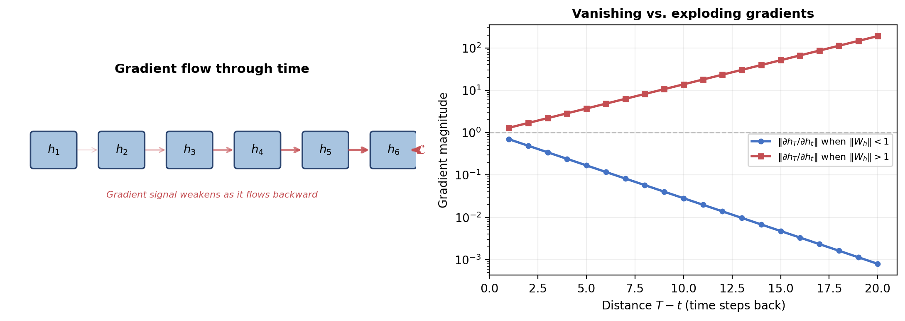

Recurrent Neural Networks for NLP
Outline
- The vanilla RNN and its recurrence relation
- Backpropagation through time and vanishing gradients
- LSTM: gated memory cells
- GRU: a simplified gating mechanism
- RNN configurations and applications
- Bidirectional RNNs
- The encoder-decoder architecture
- The attention mechanism
- Deep and stacked RNNs
- ELMo: pretrained contextualized representations
Part I: The Vanilla RNN
Processing Sequences with Recurrence
Recurrent neural networks process a sequence one element at a time
- Maintain a hidden state $h_t$ that accumulates information from all previous elements
- At each step: read input, update hidden state, optionally produce output
- In principle, $h_t$ encodes the entire history $(x_1, \ldots, x_t)$
- Dominant NLP architecture from roughly 2013 to 2017
The Recurrence Relation
$$h_t = \phi(W_h h_{t-1} + W_x x_t + b)$$
- $W_h \in \R^{n \times n}$: recurrent weight matrix (hidden-to-hidden)
- $W_x \in \R^{n \times d}$: input weight matrix (input-to-hidden)
- $\phi$: nonlinearity (typically $\tanh$)
- $h_0$ usually initialized to zeros
Unrolling Through Time

Weight Sharing
The unrolled RNN is a deep feedforward network with shared weights at every step
- All copies use the same $W_h$, $W_x$, and $b$
- Parameter count: $n^2 + nd + n$, independent of sequence length
- A feedforward network would need parameters proportional to $T$
Output at Each Step
$$P(y_t = k) = \softmax(W_y h_t + b_y)_k$$
- $W_y \in \R^{V \times n}$ projects hidden state to output space
- Used when the task requires a prediction at every position
- Examples: language modeling, POS tagging
Part II: Backpropagation Through Time
BPTT: Training an RNN
Backpropagation through time: unroll the network, compute loss, backpropagate
- Total loss is the sum of per-step losses: $\mathcal{L} = \sum_{t=1}^{T} \mathcal{L}_t$
- Gradient with respect to shared weights sums contributions from every step
- Each term requires the chain rule through the recurrence back to step 1
The Vanishing Gradient Problem
$$\frac{\partial h_T}{\partial h_t} = \prod_{k=t+1}^{T} W_h^\top \, \diag(\phi'(z_k))$$
- Each factor has norm depending on $W_h$ and $\phi'$
- For $\tanh$: $|\tanh'(z)| \leq 1$, so each factor contracts the gradient
- Over $T - t$ steps, gradient shrinks exponentially
Vanishing and Exploding Gradients

Gradient Clipping
$$g \leftarrow \frac{\theta}{\|g\|} g \quad \text{if } \|g\| > \theta$$
- Rescale gradient when its norm exceeds threshold $\theta$
- Prevents catastrophically large updates (fixes exploding gradients)
- Standard practice for training RNNs (Pascanu et al., 2013)
- Vanishing gradients require an architectural solution
Part III: Long Short-Term Memory (LSTM)
The LSTM Idea
LSTM (Hochreiter and Schmidhuber, 1997): the most influential solution to vanishing gradients
- Augment hidden state with a cell state $c_t$ -- a memory highway
- Control access to memory with learned gates
- Gates are sigmoid-activated soft switches in $(0, 1)$
The Four Components
Forget gate -- what to erase from cell state: $$f_t = \sigma(W_f [h_{t-1}; x_t] + b_f)$$
Input gate -- what new information to write: $$i_t = \sigma(W_i [h_{t-1}; x_t] + b_i)$$
Candidate cell state -- proposed new content: $$\tilde{c}_t = \tanh(W_c [h_{t-1}; x_t] + b_c)$$
Output gate -- what to expose as hidden state: $$o_t = \sigma(W_o [h_{t-1}; x_t] + b_o)$$
Cell State Update
$$c_t = f_t \odot c_{t-1} + i_t \odot \tilde{c}_t$$
- Forget gate $f_t$ controls how much of previous cell state survives
- Input gate $i_t$ controls how much of the candidate is written
- When $f_t \approx 1$ and $i_t \approx 0$: information preserved unchanged
- Gradient flows through the addition without a weight matrix or saturating nonlinearity
Hidden State Output
$$h_t = o_t \odot \tanh(c_t)$$
- Output gate $o_t$ controls how much of cell state is exposed
- $\tanh$ squashes cell values to $(-1, 1)$, keeping hidden state bounded
The LSTM Cell

Why LSTMs Solve Vanishing Gradients
$$\frac{\partial c_T}{\partial c_t} = \prod_{k=t+1}^{T} f_k$$
- When forget gates are close to 1, this product stays close to 1
- Gradient flows through the cell state unattenuated regardless of distance
- The network learns when to preserve ($f_t \approx 1$) or discard ($f_t \approx 0$)
LSTM Parameter Count
$$4n(n + d) + 4n = 4n(n + d + 1)$$
- Four weight matrices, each of size $n \times (n + d)$, plus four bias vectors
- Roughly four times the parameters of a vanilla RNN
- The cost of the gating mechanism
Part IV: Gated Recurrent Unit (GRU)
The GRU Cell
GRU (Cho et al., 2014): simplifies LSTM by merging cell and hidden states
- Two gates instead of three: update and reset
- Single hidden state vector (no separate cell state)
GRU Equations
Update gate: $z_t = \sigma(W_z [h_{t-1}; x_t] + b_z)$
Reset gate: $r_t = \sigma(W_r [h_{t-1}; x_t] + b_r)$
Candidate: $\tilde{h}_t = \tanh(W_h [r_t \odot h_{t-1}; x_t] + b_h)$
Hidden state: $h_t = (1 - z_t) \odot h_{t-1} + z_t \odot \tilde{h}_t$
GRU Architecture

GRU vs LSTM
- Update gate $z_t$ plays the role of both forget and input gates
- $z_t \approx 0$: hidden state copied forward (like $f_t \approx 1, i_t \approx 0$)
- $z_t \approx 1$: hidden state replaced by candidate
- Parameter count: $3n(n + d + 1)$ -- roughly 75% of LSTM
- Comparable performance in practice
Part V: RNN Configurations
Four Common Configurations

Language Modeling (Many-to-Many, Aligned)
$$P(w_t \mid w_1, \ldots, w_{t-1}) = \softmax(W_y h_t + b_y)$$
- $h_t$ encodes the entire history $(w_1, \ldots, w_{t-1})$
- Training loss: cross-entropy summed over all positions
- AWD-LSTM (Merity et al., 2018): state of the art before Transformers
Sequence Classification (Many-to-One)
$$\hat{y} = \softmax(W_y h_T + b_y)$$
- Use final hidden state $h_T$ as the sequence representation
- Applications: sentiment analysis, document classification
- Alternatives: element-wise max or mean pooling over all hidden states
Sequence Labeling (Many-to-Many, Aligned)
$$\hat{y}_t = \softmax(W_y h_t + b_y) \quad \text{for } t = 1, \ldots, T$$
- Output at every position, each depending on full left context
- Applications: POS tagging, named entity recognition
- Bidirectional RNNs give access to the full sequence
Part VI: Bidirectional RNNs
The Limitation of Unidirectional RNNs
Standard (left-to-right) RNN: $h_t$ encodes only $(x_1, \ldots, x_t)$
- No access to future context $(x_{t+1}, \ldots, x_T)$
- Many tasks benefit from both left and right context
- Examples: sequence labeling, classification, encoding for translation
Bidirectional RNN Architecture
$$\overrightarrow{h}_t = \text{RNN}_{\text{fwd}}(x_t, \overrightarrow{h}_{t-1}) \qquad \overleftarrow{h}_t = \text{RNN}_{\text{bwd}}(x_t, \overleftarrow{h}_{t+1})$$
$$h_t = [\overrightarrow{h}_t ; \overleftarrow{h}_t] \in \R^{2n}$$
- Forward and backward RNNs have separate parameters
- Each $h_t$ encodes the full sequence context around position $t$
Bidirectional RNN

When to Use BiRNNs
- Sequence labeling (POS tagging, NER)
- Sequence classification (using pooled or endpoint states)
- Encoder side of seq2seq models
- Cannot be used for language modeling or autoregressive decoding (must not access future tokens)
Part VII: The Encoder-Decoder Architecture
Sequence-to-Sequence Learning
Many NLP tasks map variable-length input to variable-length output
- Machine translation, summarization, question answering
- Input and output lengths generally different and unaligned
- Introduced by Sutskever et al. (2014) and Cho et al. (2014)
Encoder and Decoder
Encoder: reads input sequence, compresses to context vector $c$
$$h_t^e = \text{RNN}_{\text{enc}}(x_t, h_{t-1}^e) \qquad c = h_S^e$$
Decoder: generates output autoregressively, conditioned on $c$
$$h_t^d = \text{RNN}_{\text{dec}}(y_{t-1}, h_{t-1}^d) \qquad P(y_t \mid y_{
The Encoder-Decoder Architecture

Teacher Forcing

Teacher Forcing: Details
- Feed ground-truth previous token $y_{t-1}^*$ at each decoder step during training
- Provides stable training signal; allows parallel computation of all steps
- Exposure bias: decoder sees only correct inputs during training, but its own errors during inference
- Scheduled sampling (Bengio et al., 2015): gradually replace ground truth with model predictions
The Information Bottleneck
The entire source sentence compressed into a single fixed-size vector $c$
- Works well for short sentences
- Quality degrades sharply for long sentences (>20 tokens)
- Cho et al. (2014) observed this empirically
- Motivates the attention mechanism
Part VIII: The Attention Mechanism
Motivation for Attention
Human translators do not memorize the entire source before writing
- They repeatedly refer back to specific source words
- The decoder should be able to focus on relevant parts at each step
- Bahdanau, Cho, and Bengio (2015): a different context vector $c_t$ at each decoding step
Attention: Four Steps
1. Alignment scores: compare decoder state $s_{t-1}$ with each encoder state $h_j^e$: $$e_{tj} = v^\top \tanh(W_s s_{t-1} + W_h h_j^e)$$
2. Normalize: $\alpha_{tj} = \softmax(e_{tj})$ over source positions
3. Context vector: $c_t = \sum_{j=1}^{S} \alpha_{tj} h_j^e$
4. Decode: $s_t = \text{RNN}_{\text{dec}}(y_{t-1}, s_{t-1}, c_t)$
Attention Mechanism

Additive vs. Multiplicative Attention
Additive (Bahdanau): $e_{tj} = v^\top \tanh(W_s s_{t-1} + W_h h_j^e)$
Multiplicative (Luong): $e_{tj} = s_t^\top W_a h_j^e$ (general) or $e_{tj} = s_t^\top h_j^e$ (dot)
- Dot-product requires matching dimensionality
- Computationally cheaper -- a single matrix multiplication
- Preferred in most subsequent work, including the Transformer
What Attention Learns
- Attention weights form a matrix: target positions (rows) vs. source positions (columns)
- Approximates monotonic diagonal alignment for similar word orders (English-French)
- More complex patterns for different word orders (English-Japanese)
- Provides interpretability: a window into what the model attends to at each step
Benefits of Attention
- Resolves ambiguity: decoder can consider surrounding source context
- Long-range dependencies: $O(1)$ path length from any decoder step to any encoder step
- Eliminates the bottleneck: no need to compress into a single fixed vector
- Paved the way for the Transformer's self-attention
Part IX: Deep RNNs and Regularization
Stacking Layers
$$h_t^{(\ell)} = \text{RNN}^{(\ell)}(h_t^{(\ell-1)}, h_{t-1}^{(\ell)})$$
- Multiple recurrent layers learn increasingly abstract representations
- Each layer has its own parameters; output of one feeds the next
- 2-4 layers typical; Google NMT used 8-layer LSTMs
Dropout in RNNs
Standard dropout on recurrent connections disrupts hidden state dynamics
- Variational dropout (Gal and Ghahramani, 2016): sample a single mask per sequence, reuse at every step
- Equivalent to approximate Bayesian inference over recurrent weights
- Preserves temporal correlations in the hidden state
Part X: ELMo
The Contextualization Problem
Traditional embeddings (Word2Vec, GloVe) assign a single vector per word type
- "bank" gets the same representation in "river bank" and "bank account"
- Word meaning is context-dependent
- Static embeddings cannot capture the full range of usage
ELMo Architecture
ELMo (Peters et al., 2018): representations from a pretrained deep biLSTM
- $L = 2$ biLSTM layers trained on large corpus with language modeling objective
- Forward LSTM predicts next token; backward LSTM predicts previous token
- Layer 0: character-level CNN for context-free token representations
ELMo Architecture

What Each Layer Captures
- Layer 0 (character CNN): morphological and orthographic features
- Layer 1 (first biLSTM): syntactic features -- POS, syntactic role
- Layer 2 (second biLSTM): semantic features -- word sense, discourse role
Different layers capture fundamentally different linguistic information
The ELMo Representation
$$\text{ELMo}_t = \gamma \sum_{\ell=0}^{L} s_\ell \, h_t^{(\ell)}$$
- $s_\ell$: softmax-normalized scalar weights learned per downstream task
- $\gamma$: task-specific scaling factor
- Base biLSTM is frozen; only mixing weights are learned during fine-tuning
ELMo Impact
Improved state of the art on six NLP benchmarks:
- Question answering (SQuAD), textual entailment (SNLI)
- Semantic role labeling, coreference resolution
- Named entity recognition, sentiment analysis (SST-5)
- Improvements of 1-5% absolute on tasks where progress had stalled
The Pretrain-then-Fine-Tune Paradigm
ELMo established: train a large LM on unlabeled text, adapt to downstream tasks
- Immediately scaled up by GPT (Radford et al., 2018) and BERT (Devlin et al., 2019)
- Replaced LSTMs with Transformers
- Fine-tuned the entire model rather than just mixing weights
- Opened the door to the modern era of large language models
Part XI: Historical Context and Limitations
Key Milestones in the RNN Era
- Elman (1990): simple recurrent network; hidden states learn linguistic structure
- Hochreiter and Schmidhuber (1997): LSTM solves vanishing gradients
- Cho et al. (2014): GRU and encoder-decoder for translation
- Sutskever et al. (2014): deep LSTMs achieve state-of-the-art translation
- Bahdanau et al. (2015): attention mechanism removes the bottleneck
- Peters et al. (2018): ELMo launches pretrained representations
Fundamental Limitations of RNNs
- Sequential computation: $h_t$ depends on $h_{t-1}$, preventing parallelization; training scales as $O(T)$ per layer
- Long-range dependencies: even with gating, LSTMs struggle beyond hundreds of tokens
- Fixed-dimensional bottleneck: decoder hidden state is a fixed-size vector
Transformers address all three: parallelization, $O(1)$ path length, dynamic capacity via attention
Ideas That Survived
RNNs were superseded, but their core innovations persist in modern architectures:
- Gating (LSTM, GRU) -- foundation for residual connections
- Attention -- generalized to self-attention in Transformers
- Encoder-decoder structure -- standard in seq2seq Transformers
- Pretraining (ELMo) -- the paradigm behind GPT, BERT, and all modern LLMs
Summary
- Vanilla RNNs process sequences via $h_t = \phi(W_h h_{t-1} + W_x x_t + b)$; suffer from vanishing gradients
- LSTM solves this with a cell state highway: $c_t = f_t \odot c_{t-1} + i_t \odot \tilde{c}_t$ and three learned gates
- GRU simplifies to two gates with comparable performance at 75% of the parameters
- Bidirectional RNNs concatenate forward and backward passes for full-context representations
- Encoder-decoder compresses source to context vector; attention eliminates the bottleneck
- ELMo demonstrated pretrained biLSTM representations improve diverse NLP tasks, launching the pretrain-then-fine-tune era